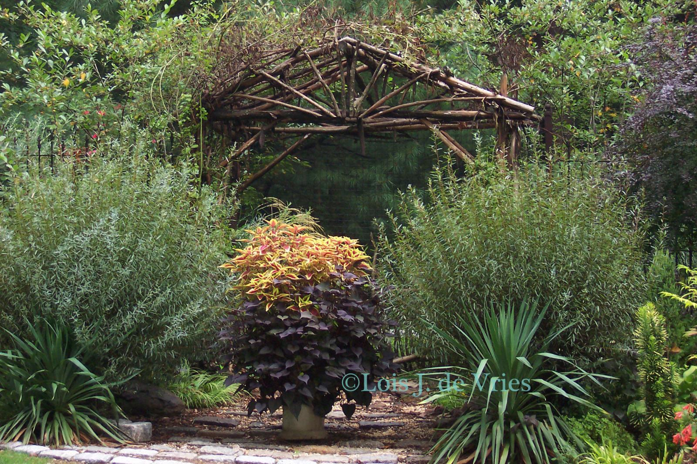

My Native Plant List
Find plants native to your ecoregion, hardy in your USDA zone, and commercially available.
mynativeplantlist.com
Find plants native to your ecoregion, hardy in your USDA zone, and commercially available.
mynativeplantlist.com